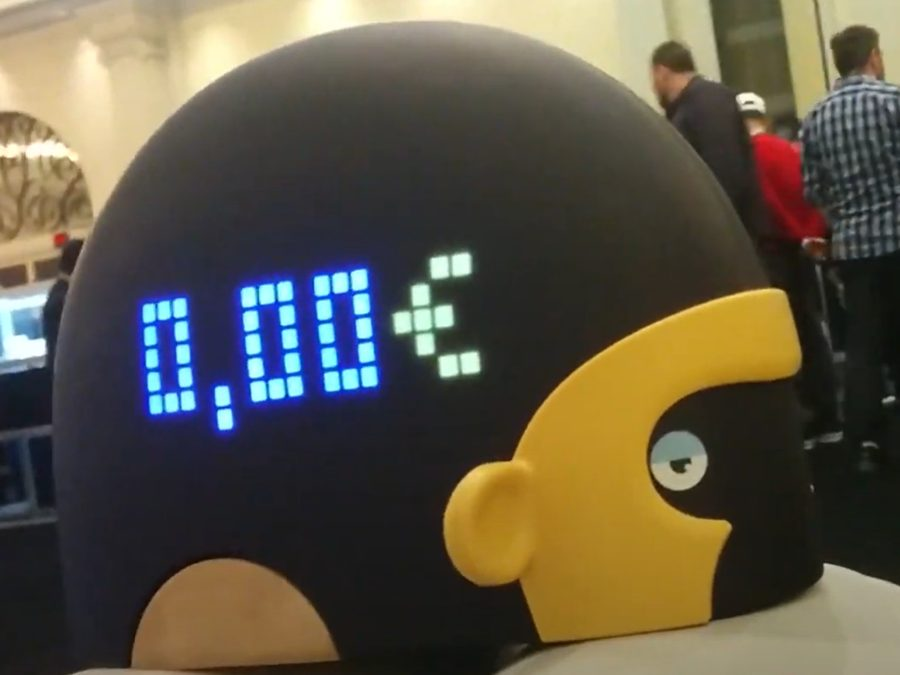

Réalisation · 2017 – 2019
Monimalz — tirelire connectée
Du prototype Raspberry au produit Linux embarqué vendu en boutique — au rythme du client.
Ingénieur R&D électronique LetMeKnow, placé chez Yellow Innovation — le lab d’innovation de La Poste — pour Monimalz, avec un appui ponctuel sur leurs autres projets.
100Unités de présérie au CES
1 000Unités industrialisées
2Projets au CES 2018
1Contribution à brevet
Trois étapes
Deux ans, deux générations de produit, et un arrêt décidé par le client.
01 · V1 — du proto au CES
05/2017 → CES 01/2018, puis Vivatech
- Proto — reprise du proto Raspberry ; première itération reçue fin août 2017.
- Présérie — livrée fin décembre 2017 : carte STM32, matrice 360 LED, son, tactile, monnayeur breveté.
- Retours — produits testés, le besoin client évolue vers plus de fonctionnalités.
02 · V2 — redesign & industrialisation
2018 → production fin 2018
- Architecture — intégration d’un SOM i.MX6 sous Linux embarqué, Wi-Fi / BLE : connectivité et jeux.
- Industrialisation — DFA et DFM méca avec l’usine, redesign électro-mécanique, passage des câbles, puis DFT.
- Validation — certifications CEM et RF.
03 · Design to cost & arrêt
début 2019
- Analyse — redesign design to cost : PCB flex pour plus de zones tactiles.
- Arrêt — le projet s’arrête en 2019, les financements de La Poste sont réduits.
- Ensuite — retour en interne chez LetMeKnow, sur le projet du client Plug & Ride.
Résultat
La V2
1 000 produits industrialisés en Chine, vendus Au Bon Marché à Paris fin 2018.
1 000 unités · vendues Au Bon Marché

La V1
100 produits fabriqués en Chine, présentés au CES 2018 avec Yellow Innovation, puis à Vivatech.
100 unités de présérie